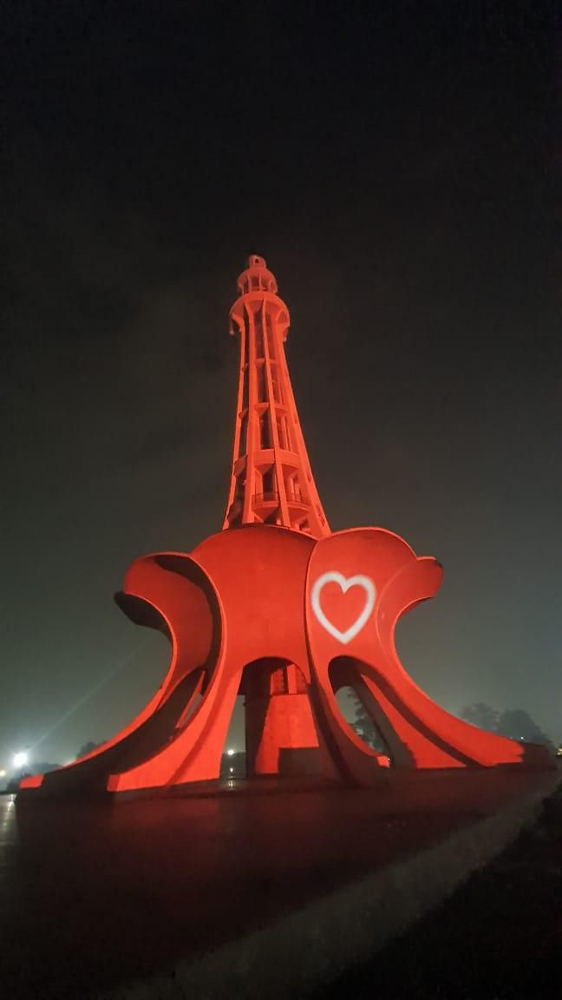

How to storyboard an architectural projection show
A practical method for turning a building, a story and a soundtrack into a projection mapping sequence the audience can follow.

A storyboard for a projection mapping show does more than arrange attractive frames. It connects the story to the architecture, describes how each moment will move, and gives artists, sound designers and the technical team a shared plan. It also reveals weak transitions before they become expensive animation work.
Write the audience journey in one paragraph
Start with what the visitor should experience from beginning to end. What do they recognize in the opening image? What changes their understanding of the building? What should remain with them after the final frame? A short narrative statement helps the team choose scenes that serve the same idea.
Map the building into story zones
Mark towers, windows, arches, columns and other repeatable features on an accurate façade template. Give each feature a purpose. An entrance may become the reveal point; two wings may carry a visual conversation; a dome can mark the climax. This is where the storyboard becomes specific to the site rather than a film merely placed on a wall.
Plan the rhythm before polishing frames
Sketch the sequence as beats: invitation, development, transformation, pause and resolution. Not every beat needs an explosion of movement. A quiet hold lets viewers study the real surface and gives contrast to the next large event. Put approximate durations beside each panel so the total show length is visible early.
Draw transitions, not only key images
The space between two scenes often determines whether a show feels coherent. Describe how one architectural idea becomes the next: a window pattern could travel along the façade, dissolve into particles and reform as a new material. Include direction, scale and timing arrows in the storyboard. A beautiful frame with no transition plan is an unfinished beat.

Design from the viewing position
A detailed drawing on a monitor may be illegible from the event audience area. Reduce the storyboard to the size the building will occupy in a viewer's field of vision. If a face, symbol or line disappears at that scale, strengthen the silhouette or give it more time. Include audience-camera previews as the storyboard develops.
Give sound a place on the page
Add notes for musical accents, silence, narration and environmental effects under each panel. A visual collapse may need a beat of anticipation before the sound lands; a heritage story may need a quieter passage for spoken material. Sharing timing early prevents the soundtrack from becoming a last-minute layer over finished animation.
Check feasibility while ideas are still cheap
Review the boards with the projection team before locking the concept. A scene that relies on fine dark detail may fail on a dark surface. An effect focused on an obstructed corner may not reach the audience. Technical review should improve the creative result by moving the idea to a stronger part of the building.
Turn boards into a simple animatic
Place the panels on a timeline with temporary sound and basic motion. The animatic tests pacing and clarity without full production cost. Watch it at least once without narration: viewers at a public event may arrive midway or miss an audio cue. The main visual story should still be readable.
Keep approvals tied to the sequence
Approve the narrative beats, architectural use and timing before moving every scene to final quality. Record comments against panel numbers and versions. When a late request changes one moment, the team can see which transitions, audio cues and output zones are affected.
Leave room for the building to speak
The strongest mapping moments often reveal something viewers had not noticed in the architecture. Storyboards should alternate transformation with recognition, allowing the actual material and structure to remain part of the experience. That relationship is what makes architectural projection distinct from a large outdoor screen.
Explore our selected projection projects for examples of how different surfaces suggest different visual stories. For the technical side of the process, read our field note on planning an architectural show.
Have a story for a building?
Share the site, audience and occasion with AKS Creative Studio. We can shape a visual direction around the architecture.
Start a conversation ↗